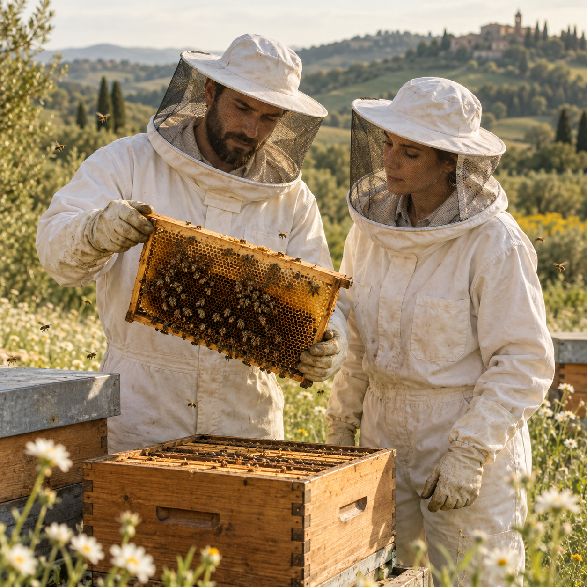

Produzione e conferimento
Gli apicoltori soci raccolgono e smielano il miele presso le proprie aziende, per poi conferirlo a CONAPI secondo regole condivise di qualità, tracciabilità e identità di filiera.
Dal 1979, la filiera del miele italiano
Dal 1979 CONAPI costruisce una filiera del miele integrata e controllata, dalla produzione in apiario fino alla commercializzazione. Con oltre 600 apicoltori e più di 100.000 alveari distribuiti sul territorio italiano, valorizza miele convenzionale e biologico e i prodotti dell'alveare, promuovendo tracciabilità, qualità e tutela della biodiversità.

Chi siamo
CONAPI – Consorzio Nazionale Apicoltori nasce nel 1979 e rappresenta oggi la più grande cooperativa apistica d'Europa. Il suo modello integra una vasta comunità di apicoltori e una base sociale che, nell'esercizio 2024/2025, conta 238 soci, uniti dalla valorizzazione del miele, dalla tutela della biodiversità e dalla qualità della filiera.
Il modello si fonda su una filiera corta, integrata e controllata: i soci apicoltori conferiscono in esclusiva il prodotto raccolto secondo regole condivise che garantiscono tracciabilità, qualità e identità lungo l'intera catena, dalla produzione in apiario fino alla commercializzazione.
Valorizzare il lavoro e le produzioni degli apicoltori soci attraverso una filiera trasparente, controllata e di qualità, contribuendo al tempo stesso alla tutela delle api, della biodiversità e dei territori.
Cooperazione · Qualità · Tracciabilità · Biodiversità · Responsabilità ambientale · Valorizzazione del territorio
Attività principale
La filiera CONAPI integra e coordina le principali fasi della produzione e valorizzazione del miele e dei prodotti dell'alveare, dalla produzione apistica fino al confezionamento e alla commercializzazione, garantendo qualità e tracciabilità lungo l'intero percorso.
Gli apicoltori soci raccolgono e smielano il miele presso le proprie aziende, per poi conferirlo a CONAPI secondo regole condivise di qualità, tracciabilità e identità di filiera.
Il miele conferito viene sottoposto a controlli organolettici, chimico-fisici e pollinici. Superate le verifiche, viene lavorato e invasettato negli impianti CONAPI secondo rigorosi standard di qualità e sicurezza alimentare.
CONAPI valorizza produzioni apistiche biologiche e convenzionali attraverso una filiera controllata e tracciabile, con particolare attenzione all'origine, alla qualità e alla tutela degli ecosistemi.
Mieli monoflora e millefiori, polline, propoli e pappa reale costituiscono il cuore dell'offerta, affiancati da prodotti e referenze innovative a base di miele.
I prodotti raggiungono il mercato attraverso i marchi Mielizia e Cuor di Miele, oltre alle private label della grande distribuzione, con una presenza sia sul mercato italiano sia internazionale.
CONAPI promuove buone pratiche apistiche e iniziative dedicate alla tutela delle api e della biodiversità, integrando competenze tecniche, innovazione e responsabilità ambientale nel proprio modello cooperativo.
Indicatori di sostenibilità
Una selezione di indicatori ambientali, sociali e di governance che descrivono la dimensione e l'evoluzione del modello cooperativo CONAPI.
Per CONAPI la sostenibilità non rappresenta un traguardo raggiunto, ma un percorso di evoluzione continua. Il primo Bilancio di Sostenibilità consolida l'impegno della cooperativa nel misurare i propri impatti e nel rafforzare un modello capace di creare valore per gli apicoltori, le persone, l'ambiente e i territori. Nei prossimi anni, il percorso di CONAPI si concentra sul miglioramento delle performance ambientali, sulla tutela della biodiversità e degli impollinatori, sulla valorizzazione della base sociale e sul rafforzamento di una filiera sempre più trasparente, efficiente e responsabile.
Crescere significa creare valore senza perdere di vista ciò da cui tutto ha origine: le api, gli apicoltori e i territori.Fonte dei dati: primo Bilancio di Sostenibilità di Conapi «Il nostro volo verso la sostenibilità». Dati riadattati a fini didattici per il Project Work.
Trasparenza di filiera
Consulta il documento integrale con la metodologia di rendicontazione, gli indicatori ESG e gli impegni assunti per i prossimi esercizi.